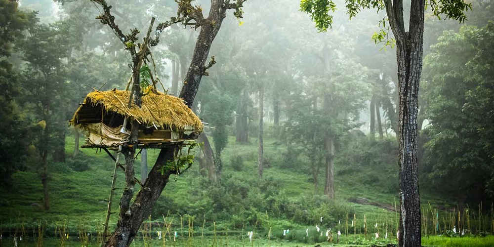
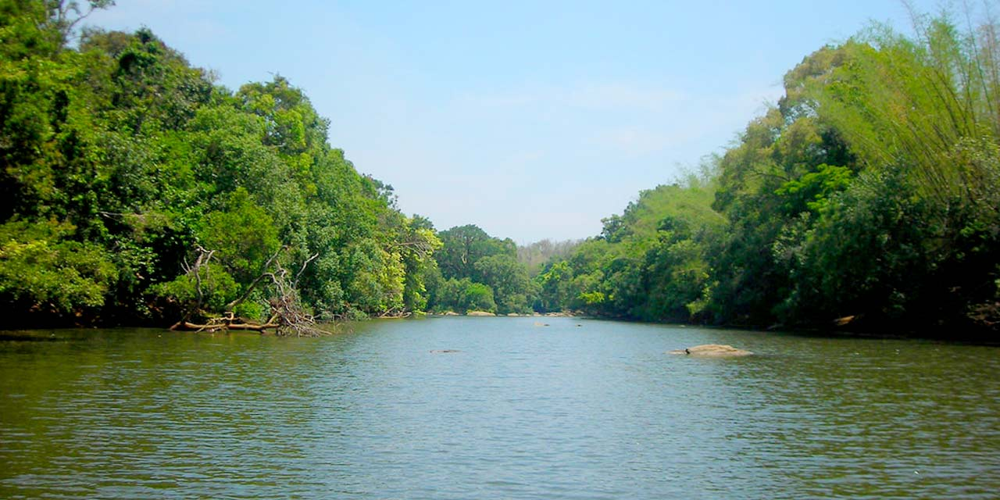
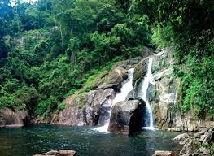
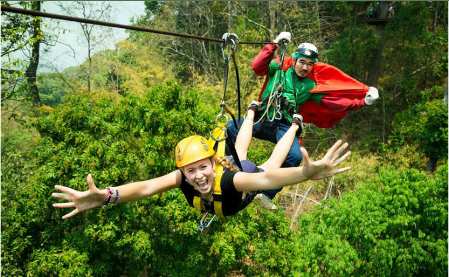
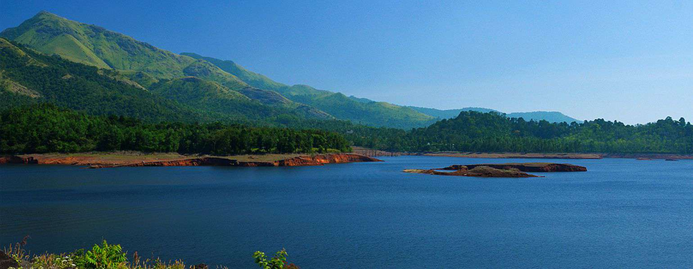
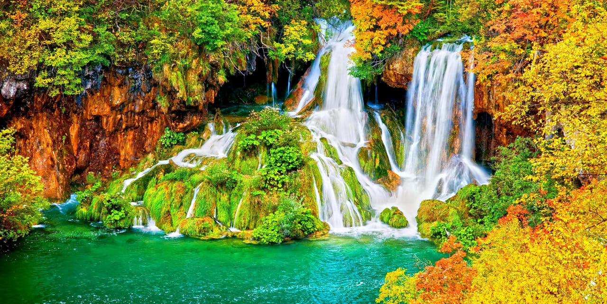
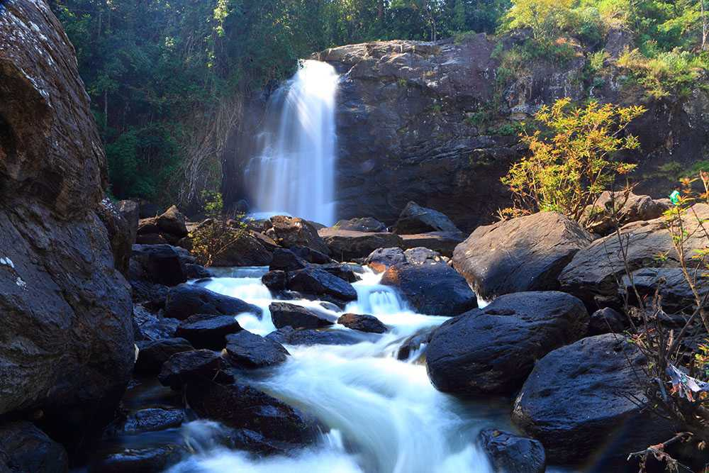

Home
(current)
Explore
Districts
Adventure
Holiday Packages
Cusines
Heritage
The Wild
Reviews
Destination
WaterFalls
Beaches
Museum
Contact Us
Sign In
Search
WAYANAD
Replete with waterfalls, historical caves, comfortable resorts and homestays, Wayanad in Kerala is famous for its spice plantations and wildlife. Walking through the sprawling spice plantations, trekking to the pre-historic caves and experiencing a resort holiday are one of the many things you can do to get a taste of Wayanad. Wayanad is best known for the wildlife reserves - Wayanad wildlife reserve which is home to an exquisite variety of flora and fauna. Wayanad wildlife reserve is an integral part of the Nilgiri biosphere reserve peacefully located amidst the serene hills of Western Ghats. Wayanad homes a wide variety of wildlife like elephants, leopards, and bears. Wayanad is a perfect weekend idea from the cities of South India. If taking a road trip from Bangalore, you will drive through three national parks: Nagarhole, Bandipur and Mudumalai.
How to Reach:
Bus
Road transport is the most well-developed form of transport in and out of Palakkad. It is well connected by road to other major cities in Kerala and the nearby states. Coimbatore is the nearest big city and is well connected by buses operated by the Kerala and Tamil Nadu governments.
Train
Palakkad has two railway stations - Palakkad junction for the broad gauge line and Palakkad Town Railway station for the narrow gauge line.
Flight
Coimbatore is the nearest airport, and there are regular bus and taxi services to ferry people to and from the airport.
Places to Visit
Banasura Sagar Dam:
Lying in the lap of the Banasura hills in the Wayanad district is the picturesque Banasura Sagar dam. Banasura Dam is the largest earthen dam in the country and the second-largest in Asia. The view of the sprawling reservoir from the top of the dam is breathtaking. Adventures like speed boating are readily available, and a trek up to the Banasura Peak is filled with streams, diverse flora, fauna, lush tropical green and majestic waterfalls.
Wayanad Wildlife Sanctuary:
Wayanad Wildlife Sanctuary is the second largest wildlife sanctuary in Kerala and comprises of rare as well as endangered species of both flora and fauna. It is surrounded by the protected areas of Mudumalai in Tamil Nadu as well as Nagarhole and Bandipur in Karnataka. Founded in the year 1973, the wildlife sanctuary is an integral part of the Nilgiri Biosphere Reserve which was the first biosphere out of the 14 present in India.
Soochipara Falls:
Also known as Sentinel Rock Waterfalls, Soochipara Falls is a three-tiered waterfall situated in Vellarimala, Wayanad. Surrounded by deciduous, evergreen and montane forests, this waterfall is regarded as one of the best waterfalls. The drive from Meppadi to Sentinel Rock Waterfalls provides visitors with scenic views of some of the best tea estates in Wayanad.
Edakkal Caves:
Famous for its exquisite rock and wall carvings, the pre-historic Edakkal Caves are two naturally occurring alcoves located in the Wayanad district of Kerala. The caves measure at a massive length and width of 96 and 22 feet respectively and lie 1200 metres above the sea level.
Things to do
Mountain Hike:
climb a mountain crossing forests and grasslands, and enjoy stunning vistas of rural Wayanad for 13 km.
Camping:
The Wayanad Camping lets you go through a great adventurous experience that contains activities such as Nature walk, Archery, Fishing, Tug Of War, Badminton, Basket Ball, Camp-Fire with Music
Cycling Tour:
Get away from the scrambles of your daily routine with an off road cycling trip in Wayanad, Kerala; revel in the beauty of natural greenery prevailing in the locality.
Gallery






